Round-trip distance between correlated charge fluctuations: //
Round-trip travel time:
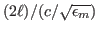 //
Fluctuation lifetime = 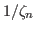//
Ratio 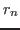 = travel time/flucuation lifetime =
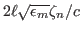 = (1/2)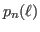 from RP's report//
 |
(18) |
and
 |
(20) |
with
 |
(21) |
where
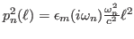.
with the n = 0 term given by
and
where 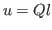.
Figure 12:
vs  for several values of n, where
. . For each value of n (corresponding to different line colors and line styles), there is an value for which
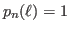. A black line is provided to show 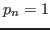.
for several values of n, where
. . For each value of n (corresponding to different line colors and line styles), there is an value for which
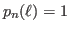. A black line is provided to show 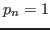.
|
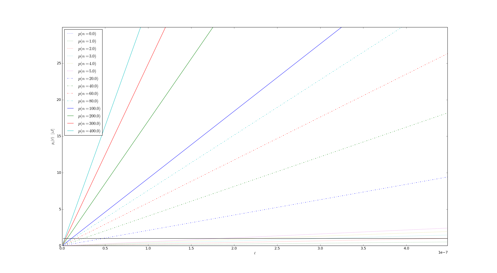
|
where
.
Figure 14:
Plot of values of n, for which
. Blue stars with
the label "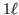" are solutions to
for travel time from
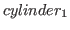 to
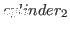, but not back to
. Blue stars with
the label "" are solutions to
for travel time from
to
and back to
. Stars of other colors represent
solutions to
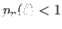.
|
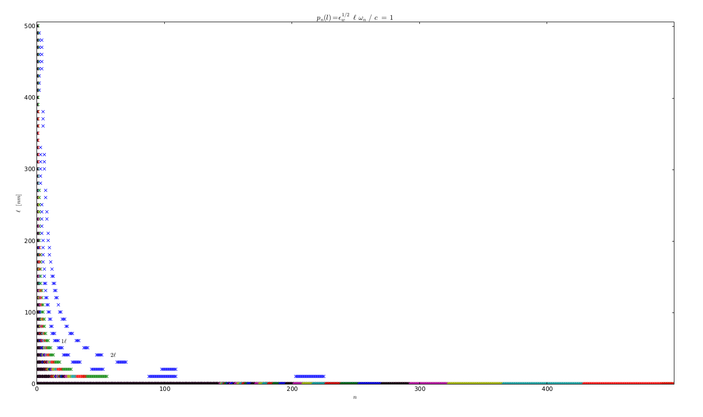
|
Figure 15:
Derivative of
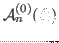 for [6,5] with resepct to
 and separation. Valleys in this 3D surface plot correspond to the
infection points in
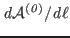 of fig. 11 of previous
section and the solutions to
in fig. 14 above.
and separation. Valleys in this 3D surface plot correspond to the
infection points in
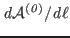 of fig. 11 of previous
section and the solutions to
in fig. 14 above.
|
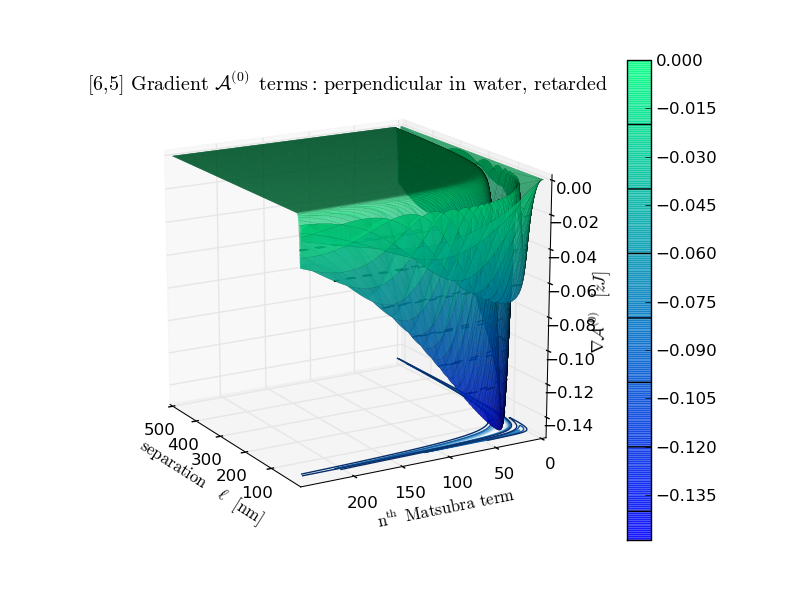
|
Jaime
2014-05-13